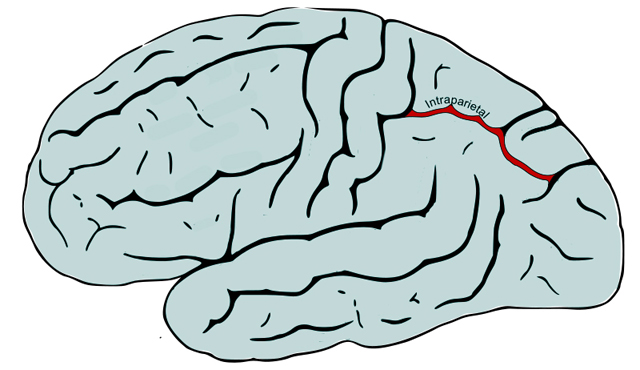

Es un trastorno específico del desarrollo, de base biológica, que afecta profundamente al aprendizaje de las capacidades aritméticas y las matemáticas. Muchas veces se define como “dislexia matemática”. Esta patología es independiente al nivel de inteligencia del niño y también a los métodos pedagógicos empleados. La dificultad se centra en la capacidad interpretación de los símbolos numéricos y los conocimientos aritméticos como la suma, resta, multiplicación y división. El niño que sufre discalculia es aquel que confunde los números y los signos y no consigue realizar cálculos mentales ni trabajar con abstracciones. Estos niños encuentran dificultades para cumplir con ejercicios académicos o tareas prácticas como problemas o cálculos matemáticos. Por lo tanto, la discalculia podría definirse como la disfunción en las conexiones neuronales que procesan el lenguaje numérico, dificultando las funciones cerebrales que permiten el procesamiento y acceso a la información numérica. La prevalencia de la discalculia entre la población escolar que oscila entre el 3% - 6%, siguiendo una distribución similar entre niños y niñas.
Tipos de DISCALCULIA
Discalculia verbal: Este tipo de discalculia representa dificultad en nombrar y comprender los conceptos matemáticos presentados verbalmente. Los niños son capaces de leer o escribir los números pero no de reconocerlos cuando son pronunciados por otros. Discalculia practognóstica: Este tipo atiende a la dificultad para traducir su conocimiento sobre los conceptos abstracto-matemáticos a conceptos netos o reales. Estas personas son capaces de entender conceptos matemáticos pero tienen dificultades para enumerar, comparar y manipular las operaciones matemáticas en la práctica. Discalculia léxica: Se corresponde con la dificultad en la lectura de los símbolos matemáticos, los números así como las expresiones matemáticas o ecuaciones. El niño con este tipo de discalculia léxica puede entender los conceptos relacionados con las matemáticas cuando se habla de ellos pero tiene dificultades para leerlos y comprenderlos. Discalculia gráfica: Es la dificultad para escribir símbolos matemáticos, los niños que padecen este tipo de discalculia son capaces de entender los conceptos matemáticos pero no tiene la capacidad para leerlos así como escribir o usar los símbolos matemáticos. Discalculia ideognóstica: Es la dificultad para realizar operaciones mentales, sin usar los números para llegar al resultado y para comprender conceptos o ideas relacionadas con las matemáticas o la aritmética. Además el niño con discalculia ideognástica tiene dificultades para recordar los conceptos matemáticos después de aprenderlos. Discalculia operacional: Este tipo de discalculia se corresponde con la dificultad para ejecutar operaciones aritméticas o cálculos matemáticos tanto verbales como escritos. Una persona con discalculia operacional, será capaz de entender los números y las relaciones entre ellos pero su dificultad se encuentra a la hora de manipular números y símbolos matemáticas para el proceso de cálculo
¿Cómo afecta la discalculia al CEREBRO?
La discalculia se presenta como una disfunción neuronal en el surco intraparietal del cerebro. A raíz de esta disfunción se desarrolla un patrón de deterioro cognitivo, la psicopatología de la discalculia y el insomnio infantil comparte algunos mecanismos neurobiológicos. La discalculia suele identificarse con déficits en habilidades como: La psicopatología del TDAH y la regulación del ciclo vigilia – sueño comparten mecanismos neurobiológicos.
Atención focalizada (concentración): Habilidad relacionada con el patrón de deterioro cognitivo implicado en la dislexia. El déficit estructural en esta red de conexiones neuronales está relacionado, también, con la inhibición, afecta negativamente a la agilidad con la que el niño se desenvuelve en las tareas matemáticas.
Atención dividida: Esta habilidad es importante ya que permite atender a dos estímulos al mismo tiempo. Los niños con discalculia presentan problemas para responder ágilmente a un determinado estímulo porque no son capaces de focalizar, se despistan con estímulos irrelevantes, y se cansan fácilmente.
Memoria de trabajo: Esta habilidad cognitiva se refiere al almacenamiento temporal y a la capacidad de manipular información para realizar tareas complejas. Las dificultades atienden a problemas para seguir instrucciones, olvidan instrucciones y tareas, presentan bajo nivel de motivación, recuerdos incompletos, alto nivel de distracción, no recuerda los números y aritmética mental retardada, entre otras.
Memoria a corto plazo: Es la capacidad de poder retener en el cerebro una pequeña cantidad de información durante un periodo breve de tiempo. Este déficit cerebral explica la incapacidad para realizar tareas aritméticas. Las dificultades que encuentran a la hora de ejecutar un cálculo o problemas matemáticos- Esta habilidad cognitiva está relacionada también con la incapacidad para recordar números o tablas de multiplicar.
Habilidad de denominación: Implica la capacidad de recuperar una palabra o número de nuestro léxico y posteriormente expresarla. Los niños con discalculia tienen dificultades para recordar los números porque su nivel de procesamiento de la información y habilidad de denominación es deficiente.
Planificación: Bajos niveles en esta habilidad cognitiva implica dificultades a la hora de comprender el planteamiento y dar sentido numérico al ejercicio. Esta incapacidad de anticipación impide ejecutar la tarea de forma correcta.
Velocidad de procesamiento: Se corresponde con el tiempo que tarda nuestro cerebro en recibir una información (un número, una operación matemática, un problema…), entenderla y responder a ella. Los niños sin dificultades de aprendizaje realizan este proceso de forma rápida y automática, en cambio los niños con discalculia necesitan más tiempo y esfuerzo para procesar la información y estímulos.

En la imagen superior se muestra el área cerebral afectada por discalculia.